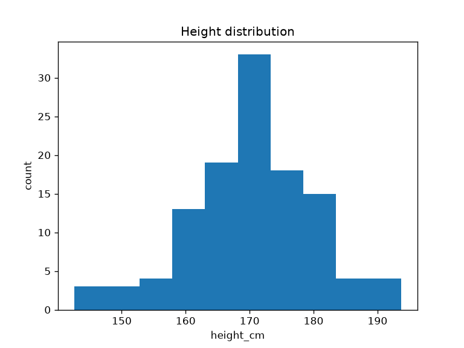
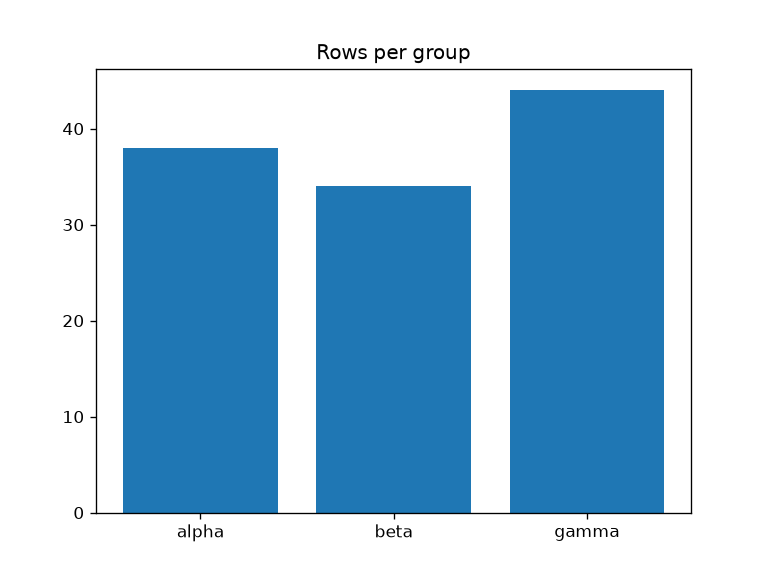
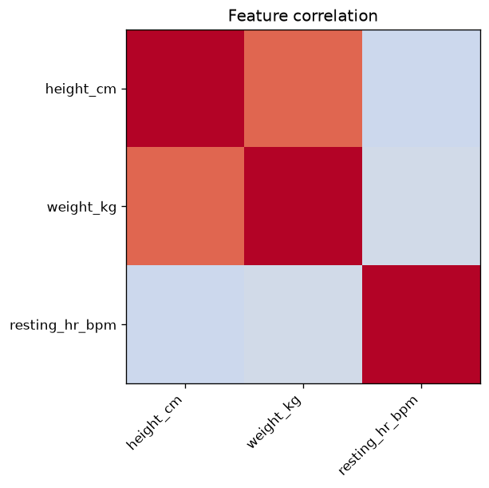

Results
This section presents the exploratory analysis of the shipped
dataset. Every figure and the summary table are produced by the EDA
analysis orchestrator (scripts/eda_analysis.py), which
calls the tested figure-data preparers in
src/eda/figures.py. Running the script regenerates the
figures under ../figures/ and the summary CSV under
output/data/; the prose below describes what those
artifacts show.
Dataset and missingness
The dataset contains 120 subject records across three groups
(alpha, beta, gamma) with three
numeric features: height (cm), weight (kg), and resting heart rate
(bpm). A small number of cells are blank by design.
load_dataset() preserves these as NaN;
clean_dataset() then drops rows missing any numeric feature
and reports the count. With the shipped data, four rows are removed,
leaving a complete-case dataset for the analysis below.
Distributions
[@fig:height_histogram] shows
the distribution of height across the complete-case dataset, binned by
histogram_data() and plotted by the analysis script.

histogram_data(frame, "height_cm", bins=10) in
src/eda/figures.py and plotted as a bar chart by
scripts/eda_analysis.py. The bin counts sum to the number
of complete-case rows; the shape is the roughly bell-shaped spread
expected from the generating process.Group composition
[@fig:group_counts] reports how
many complete-case rows fall in each group, computed by
group_count_data() (labels sorted for deterministic
output).

group_count_data(). The three
groups are of comparable, though not identical, size; the counts sum to
the complete-case row total.Correlation structure
[@fig:correlation_heatmap]
visualizes the Pearson correlation matrix of the three numeric features,
computed by correlation_matrix() and prepared for the
heatmap by correlation_heatmap_data(). The diagonal is
unity by construction and the matrix is symmetric.

correlation_heatmap_data() (which wraps
correlation_matrix(method="pearson")) rendered with a
diverging colour map on the fixed range \([-1,
1]\). Height and weight are strongly positively correlated;
resting heart rate is only weakly related to the other two.strongest_pairs(matrix, top_n=3) ranks the distinct
feature pairs by absolute correlation while preserving sign. On the
shipped data the dominant relationship is height ~
weight (a strong positive correlation, by design), followed by
the comparatively weak height ~ resting heart rate
(slightly negative) and weight ~ resting heart rate.
This ranking is the single most useful artifact of the first pass: it
points directly at the relationship worth modelling next.
Summary statistics
The analysis script writes a per-column summary table to
output/data/summary_statistics.csv from
summary_statistics(). Each row reports the count of
non-missing observations, mean, sample standard deviation, minimum,
median, and maximum for one numeric feature.
| Column | Reported statistics |
|---|---|
height_cm |
count, mean, std, min, median, max |
weight_kg |
count, mean, std, min, median, max |
resting_hr_bpm |
count, mean, std, min, median, max |
group_means() complements this with the mean of each
numeric feature within each group; the three group means for height are
close but not equal, reflecting the mild group structure in the
generating process.
Validation
The analysis was validated through the zero-mock tests/
suite:
- Library tests assert exact statistics, correlation signs, and bin counts against the shipped CSV and hand-built frames.
- Script test runs
run_eda()against a temporary output root and confirms real PNG figures and a real summary CSV are written. - Notebook test confirms the walkthrough notebook binds to the library’s public surface and carries no logic in its cells.
All tests pass with coverage exceeding the 90% project gate, with no mocks.
Discussion
The results confirm the EDA workflow end to end: missingness is surfaced and removed with an explicit count, distributions and group composition are read straight from tested preparers, and the correlation ranking recovers the designed height–weight relationship. The same functions back the interactive notebook, the headless script, and this manuscript — which is the architectural point of the exemplar. Because every number is produced by a tested function and regenerated on demand, the prose here describes structure and provenance rather than transcribing values that would drift the moment the data changed.